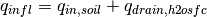

7. Hydrology¶
The model parameterizes interception, throughfall, canopy drip, snow
accumulation and melt, water transfer between snow layers, infiltration,
evaporation, surface runoff, sub-surface drainage, redistribution within
the soil column, and groundwater discharge and recharge to simulate
changes in canopy water  , surface water
, surface water
 , snow water
, snow water  , soil water
, soil water
 , and soil ice
, and soil ice  ,
and water in the unconfined aquifer
,
and water in the unconfined aquifer  (all in kg
m-2 or mm of H2O) (Figure 7.1).
(all in kg
m-2 or mm of H2O) (Figure 7.1).
The total water balance of the system is
(1)¶
where  is the liquid part of precipitation,
is the liquid part of precipitation,
 is the solid part of precipitation,
is the solid part of precipitation,  is
ET from vegetation (Chapter 5),
is
ET from vegetation (Chapter 5),  is ground evaporation
(Chapter 5),
is ground evaporation
(Chapter 5),  is surface runoff (section 7.2.1),
is surface runoff (section 7.2.1),
 is runoff from surface water storage (section 7.2.1),
is runoff from surface water storage (section 7.2.1),
 is sub-surface drainage (section 7.5),
is sub-surface drainage (section 7.5),
 and
and  are liquid and solid runoff
from glaciers, wetlands, and lakes, and runoff from other surface types
due to snow capping (section 7.6) (all in kg m-2
s-1),
are liquid and solid runoff
from glaciers, wetlands, and lakes, and runoff from other surface types
due to snow capping (section 7.6) (all in kg m-2
s-1),  is the number of soil layers
(note that hydrology calculations are only done over soil layers 1 to
; ground levels
is the number of soil layers
(note that hydrology calculations are only done over soil layers 1 to
; ground levels  to
to
 are currently hydrologically inactive; (Lawrence et
al. 2008) and
are currently hydrologically inactive; (Lawrence et
al. 2008) and  is the time step (s).
is the time step (s).

Figure 7.1 Hydrologic processes represented in CLM.
7.1. Canopy Water¶
Precipitation is either intercepted by the canopy, falls directly to the
snow/soil surface (throughfall), or drips off the vegetation (canopy
drip). Interception by vegetation  (kg
m-2 s-1) does not distinguish between
liquid and solid phases
(kg
m-2 s-1) does not distinguish between
liquid and solid phases
(2)¶![q_{intr} =\alpha \left(q_{rain} +q_{sno} \right)\left\{1-\exp \left[-0.5\left(L+S\right)\right]\right\}](../../_images/math/5fa8bea9e0b141537513c612b10fa16ef232037a.png)
where  and
and  are the exposed leaf and stem area index,
respectively (section 2.1.4), and
are the exposed leaf and stem area index,
respectively (section 2.1.4), and  scales
interception from point to grid cell (Lawrence et al. 2007). Throughfall
(kg m-2 s-1), however, is divided into
liquid and solid phases reaching the ground (soil or snow surface) as
scales
interception from point to grid cell (Lawrence et al. 2007). Throughfall
(kg m-2 s-1), however, is divided into
liquid and solid phases reaching the ground (soil or snow surface) as
(3)¶![q_{thru,\, liq} =q_{rain} \left[1-\alpha \left\{1-\exp \left[-0.5\left(L+S\right)\right]\right\}\right]](../../_images/math/4ef6df3e75d9619db9df153725156d1e091f69cf.png)
(4)¶![q_{thru,\, ice} =q_{sno} \left[1-\alpha \left\{1-\exp \left[-0.5\left(L+S\right)\right]\right\}\right].](../../_images/math/cbb17ba5b504ccd249d2e917425555281ad0d0cf.png)
Similarly, the canopy drip is
(5)¶
(6)¶
where
(7)¶
is the canopy water after accounting for interception,
 is the canopy water from the previous time step,
and
is the canopy water from the previous time step,
and  (kg m-2) is the maximum
amount of water the canopy can hold
(kg m-2) is the maximum
amount of water the canopy can hold
(8)¶
The maximum storage of solid water is assumed to be the same as that of
liquid water,  kg m-2 (Dickinson et al.
1993). The canopy water is updated as
kg m-2 (Dickinson et al.
1993). The canopy water is updated as
(9)¶
where  is the flux of water vapor from stem and leaf
surfaces (Chapter 5). The total rate of liquid and solid precipitation
reaching the ground is then
is the flux of water vapor from stem and leaf
surfaces (Chapter 5). The total rate of liquid and solid precipitation
reaching the ground is then
(10)¶
(11)¶
Solid precipitation reaching the soil or snow surface,
 , is added immediately to the snow pack
(Chapter 8). The liquid part,
, is added immediately to the snow pack
(Chapter 8). The liquid part,
 is added after surface fluxes
(Chapter 5)
and snow/soil temperatures (Chapter 6)
have been determined.
is added after surface fluxes
(Chapter 5)
and snow/soil temperatures (Chapter 6)
have been determined.
The wetted fraction of the canopy (stems plus leaves), which is required for the surface albedo (section 3.1) and surface flux (Chapter 5) calculations is (Dickinson et al.1993)
(12)¶![f_{wet} =
\left\{\begin{array}{lr}
\left[\frac{W_{can} }{p\left(L+S\right)} \right]^{{2\mathord{\left/ {\vphantom {2 3}} \right. \kern-\nulldelimiterspace} 3} } \le 1 & \qquad L+S > 0 \\
0 &\qquad L+S = 0
\end{array}\right\}](../../_images/math/4f4da73d5d055457f6e16a73db57c09e773a45ac.png)
while the fraction of the canopy that is dry and transpiring is
(13)¶
7.2. Surface Runoff, Surface Water Storage, and Infiltration¶
The moisture input at the grid cell surface , , is
the sum of liquid precipitation reaching the ground and melt water from
snow (kg m-2 s-1). The moisture flux is
then partitioned between surface runoff, surface water storage, and
infiltration into the soil.
, is
the sum of liquid precipitation reaching the ground and melt water from
snow (kg m-2 s-1). The moisture flux is
then partitioned between surface runoff, surface water storage, and
infiltration into the soil.
7.2.1. Surface Runoff¶
The simple TOPMODEL-based (Beven and Kirkby 1979)
runoff model (SIMTOP) described by Niu et al. (2005)
is implemented to parameterize runoff. A
key concept underlying this approach is that of fractional saturated
area  , which is determined by the topographic
characteristics and soil moisture state of a grid cell. The saturated
portion of a grid cell contributes to surface runoff, ,
by the saturation excess mechanism (Dunne runoff)
, which is determined by the topographic
characteristics and soil moisture state of a grid cell. The saturated
portion of a grid cell contributes to surface runoff, ,
by the saturation excess mechanism (Dunne runoff)
(14)¶
The fractional saturated area is a function of soil moisture
(15)¶
where  is the potential or maximum value of
,
is the potential or maximum value of
,  is a decay factor
(m-1), and
is a decay factor
(m-1), and  is the water table depth
(m) (section 7.6). The maximum saturated fraction, ,
is defined as the value of the discrete cumulative distribution function
(CDF) of the topographic index when the grid cell mean water table depth
is zero. Thus, is the percent of pixels in a grid
cell whose topographic index is larger than or equal to the grid cell
mean topographic index. It should be calculated explicitly from the CDF
at each grid cell at the resolution that the model is run. However,
because this is a computationally intensive task for global
applications, is calculated once at 0.125o
resolution using the 1-km compound topographic indices (CTIs) based on
the HYDRO1K dataset (Verdin and Greenlee 1996)
from USGS following the algorithm in Niu et al. (2005)
and then area-averaged to the desired model resolution (section
2.3.3). Pixels
with CTIs exceeding the 95 percentile threshold in each
0.125o grid cell are excluded from the calculation to
eliminate biased estimation of statistics due to large CTI values at
pixels on stream networks. For grid cells over regions without CTIs such
as Australia, the global mean is used to fill the
gaps. See Li et al. (2013b) for additional details. The decay factor
for global simulations was determined through
sensitivity analysis and comparison with observed runoff to be 0.5
m-1.
is the water table depth
(m) (section 7.6). The maximum saturated fraction, ,
is defined as the value of the discrete cumulative distribution function
(CDF) of the topographic index when the grid cell mean water table depth
is zero. Thus, is the percent of pixels in a grid
cell whose topographic index is larger than or equal to the grid cell
mean topographic index. It should be calculated explicitly from the CDF
at each grid cell at the resolution that the model is run. However,
because this is a computationally intensive task for global
applications, is calculated once at 0.125o
resolution using the 1-km compound topographic indices (CTIs) based on
the HYDRO1K dataset (Verdin and Greenlee 1996)
from USGS following the algorithm in Niu et al. (2005)
and then area-averaged to the desired model resolution (section
2.3.3). Pixels
with CTIs exceeding the 95 percentile threshold in each
0.125o grid cell are excluded from the calculation to
eliminate biased estimation of statistics due to large CTI values at
pixels on stream networks. For grid cells over regions without CTIs such
as Australia, the global mean is used to fill the
gaps. See Li et al. (2013b) for additional details. The decay factor
for global simulations was determined through
sensitivity analysis and comparison with observed runoff to be 0.5
m-1.
7.2.2. Surface Water Storage¶
A surface water store has been added to the model to represent wetlands
and small, sub-grid scale water bodies. As a result, the wetland land
unit has been removed. The state variables for surface water are the
mass of water  (kg m-2) and temperature
(kg m-2) and temperature
 (Chapter 6).
Surface water storage and outflow are
functions of fine spatial scale elevation variations called
microtopography. The microtopography is assumed to be distributed
normally around the grid cell mean elevation. Given the standard
deviation of the microtopographic distribution,
(Chapter 6).
Surface water storage and outflow are
functions of fine spatial scale elevation variations called
microtopography. The microtopography is assumed to be distributed
normally around the grid cell mean elevation. Given the standard
deviation of the microtopographic distribution,  (m), the fractional area of the grid cell that is inundated can be
calculated. Surface water storage,
(m), the fractional area of the grid cell that is inundated can be
calculated. Surface water storage,  , is related to the
height (relative to the grid cell mean elevation) of the surface water,
, is related to the
height (relative to the grid cell mean elevation) of the surface water,
 , by
, by
(16)¶
where  is the error function. For a given value of
, equation can be solved for using the
Newton-Raphson method. Once is known, one can determine the
fraction of the area that is inundated as
is the error function. For a given value of
, equation can be solved for using the
Newton-Raphson method. Once is known, one can determine the
fraction of the area that is inundated as
(17)¶
No global datasets exist for microtopography, so the default parameterization is a simple function of slope
(18)¶
where  is the topographic slope,
is the topographic slope,
 determines
the maximum value of
determines
the maximum value of  , and
, and  is an
adjustable parameter. Default values in the model are
and
is an
adjustable parameter. Default values in the model are
and  .
.
If the spatial scale of the microtopography is small relative to that of the grid cell, one can assume that the inundated areas are distributed randomly within the grid cell. With this assumption, a result from percolation theory can be used to quantify the fraction of the inundated portion of the grid cell that is interconnected
(19)¶
where  is a threshold below which no single connected
inundated area spans the grid cell and
is a threshold below which no single connected
inundated area spans the grid cell and  is a scaling
exponent. Default values of and are 0.4 and
0.14, respectively. When the inundated fraction of the grid cell
surpasses , the surface water store acts as a linear
reservoir
is a scaling
exponent. Default values of and are 0.4 and
0.14, respectively. When the inundated fraction of the grid cell
surpasses , the surface water store acts as a linear
reservoir
(20)¶
where  is the surface water runoff,
is the surface water runoff,  is a constant,
is a constant,  is the amount of surface water present when
is the amount of surface water present when
 , and is the model time step.
The linear storage coefficent
, and is the model time step.
The linear storage coefficent  is a function of grid cell mean topographic slope where
is the slope in radians.
is a function of grid cell mean topographic slope where
is the slope in radians.
7.2.3. Infiltration¶
The surface moisture flux remaining after surface runoff has been removed,
(21)¶
is divided into inputs to surface water ( ) and
the soil
) and
the soil  . If exceeds the
maximum soil infiltration capacity (kg m-2
s-1),
. If exceeds the
maximum soil infiltration capacity (kg m-2
s-1),
(22)¶
where  is an ice impedance factor (section
7.3.1), infiltration excess (Hortonian) runoff is generated
is an ice impedance factor (section
7.3.1), infiltration excess (Hortonian) runoff is generated
(23)¶
and transferred from to  .
After evaporative losses have been removed, these moisture fluxes are
.
After evaporative losses have been removed, these moisture fluxes are
(24)¶
and
(25)¶
The balance of surface water is then calculated as
(26)¶
Bottom drainage from the surface water store
(27)¶
is then added to giving the total infiltration
into the surface soil layer
(28)¶
Infiltration  and explicit surface runoff
are not allowed for glaciers.
and explicit surface runoff
are not allowed for glaciers.
7.3. Soil Water¶
Soil water is predicted from a multi-layer model, in which the vertical soil moisture transport is governed by infiltration, surface and sub-surface runoff, gradient diffusion, gravity, and canopy transpiration through root extraction (Figure 7.1). The following derivation generally follows that of Z.-L. Yang (1998, unpublished manuscript).
For one-dimensional vertical water flow in soils, the conservation of mass is stated as
(29)¶
where  is the volumetric soil water content
(mm:sup:3 of water mm-3 of soil),
is the volumetric soil water content
(mm:sup:3 of water mm-3 of soil),  is
time (s),
is
time (s),  is height above some datum in the soil column (mm)
(positive upwards),
is height above some datum in the soil column (mm)
(positive upwards),  is soil water flux (kg m-2
s-1 or mm s-1) (positive upwards), and
is soil water flux (kg m-2
s-1 or mm s-1) (positive upwards), and
 is a soil moisture sink term (mm of water mm-1
of soil s-1) (ET loss). This equation is solved
numerically by dividing the soil column into multiple layers in the
vertical and integrating downward over each layer with an upper boundary
condition of the infiltration flux into the top soil layer
and a zero-flux lower boundary condition at the
bottom of the soil column (sub-surface runoff is removed later in the
timestep, section 7.5).
is a soil moisture sink term (mm of water mm-1
of soil s-1) (ET loss). This equation is solved
numerically by dividing the soil column into multiple layers in the
vertical and integrating downward over each layer with an upper boundary
condition of the infiltration flux into the top soil layer
and a zero-flux lower boundary condition at the
bottom of the soil column (sub-surface runoff is removed later in the
timestep, section 7.5).
The soil water flux in equation can be described by Darcy’s
law (Dingman 2002)
(30)¶
where  is the hydraulic conductivity (mm s-1),
and
is the hydraulic conductivity (mm s-1),
and  is the hydraulic potential (mm). The hydraulic
potential is
is the hydraulic potential (mm). The hydraulic
potential is
(31)¶
where  is the soil matric potential (mm) (which is
related to the adsorptive and capillary forces within the soil matrix),
and
is the soil matric potential (mm) (which is
related to the adsorptive and capillary forces within the soil matrix),
and  is the gravitational potential (mm) (the vertical
distance from an arbitrary reference elevation to a point in the soil).
If the reference elevation is the soil surface, then
is the gravitational potential (mm) (the vertical
distance from an arbitrary reference elevation to a point in the soil).
If the reference elevation is the soil surface, then
 . Letting
. Letting  , Darcy’s law
becomes
, Darcy’s law
becomes
(32)¶![q=-k\left[\frac{\partial \left(\psi +z\right)}{\partial z} \right].](../../_images/math/847afefb24a51d5942638181157a319539ba5fe1.png)
Equation (32) can be further manipulated to yield
(33)¶![q=-k\left[\frac{\partial \left(\psi +z\right)}{\partial z} \right]=-k\left(\frac{\partial \psi }{\partial z} +1\right)=-k\left(\frac{\partial \theta }{\partial z} \frac{\partial \psi }{\partial \theta } +1\right).](../../_images/math/fea88aa5279a0f96b6a4c2e338de5df69469553b.png)
Substitution of this equation into equation (29), with  , yields
the Richards equation
, yields
the Richards equation
(34)¶![\frac{\partial \theta }{\partial t} =\frac{\partial }{\partial z} \left[k\left(\frac{\partial \theta }{\partial z} \frac{\partial \psi }{\partial \theta } +1\right)\right].](../../_images/math/8256ba75cca1bca73533b4b298fd4716e04c13bb.png)
7.3.1. Hydraulic Properties¶
The hydraulic conductivity  (mm s-1) and
the soil matric potential
(mm s-1) and
the soil matric potential  (mm) for layer
(mm) for layer  vary with volumetric soil water
vary with volumetric soil water  and soil texture.
As with the soil thermal properties (section 6.3) the hydraulic
properties of the soil are assumed to be a weighted combination of the
mineral properties, which are determined according to sand and clay
contents based on work by Clapp and Hornberger (1978) and Cosby et al. (1984),
and organic properties of the soil
(Lawrence and Slater 2008).
and soil texture.
As with the soil thermal properties (section 6.3) the hydraulic
properties of the soil are assumed to be a weighted combination of the
mineral properties, which are determined according to sand and clay
contents based on work by Clapp and Hornberger (1978) and Cosby et al. (1984),
and organic properties of the soil
(Lawrence and Slater 2008).
The hydraulic conductivity is defined at the depth of the interface of
two adjacent layers  (Figure 7.2) and is a function
of the saturated hydraulic conductivity
(Figure 7.2) and is a function
of the saturated hydraulic conductivity
![k_{sat} \left[z_{h,\, i} \right]](../../_images/math/6e559173da81f657eb2d2a2d0b5ef7a651b441e3.png) , the liquid volumetric soil
moisture of the two layers and
and an ice impedance factor
, the liquid volumetric soil
moisture of the two layers and
and an ice impedance factor

(35)¶
The ice impedance factor is a function of ice content, and is meant to
quantify the increased tortuosity of the water flow when part of the
pore space is filled with ice. Swenson et al. (2012)
used a power law form  where
where
 and
and
 is the
ice-filled fraction of the pore space.
is the
ice-filled fraction of the pore space.
Because the hydraulic properties of mineral and organic soil may differ significantly, the bulk hydraulic properties of each soil layer are computed as weighted averages of the properties of the mineral and organic components. The water content at saturation (i.e. porosity) is
(36)¶
where  is the soil organic matter fraction,
is the soil organic matter fraction,
 (Farouki 1981;
Letts et al. 2000) is the
porosity of organic matter and the porosity of the mineral soil
is
(Farouki 1981;
Letts et al. 2000) is the
porosity of organic matter and the porosity of the mineral soil
is
(37)¶
The exponent  is
is
(38)¶
where  (Letts et al. 2000) and
(Letts et al. 2000) and
(39)¶
The soil matric potential (mm) is defined at the node depth
 of each layer (Figure 7.2)
of each layer (Figure 7.2)
(40)¶
where the saturated soil matric potential (mm) is
(41)¶
where  mm (Letts et al. 2000) is the
saturated organic matter matric potential and the saturated mineral soil
matric potential
mm (Letts et al. 2000) is the
saturated organic matter matric potential and the saturated mineral soil
matric potential  is
is
(42)¶
The saturated hydraulic conductivity,
(mm s-1), for
organic soils ( ) may be two to three orders of
magnitude larger than that of mineral soils (
) may be two to three orders of
magnitude larger than that of mineral soils ( ).
Bulk soil layer values of
).
Bulk soil layer values of  calculated as weighted
averages based on
calculated as weighted
averages based on  may therefore be determined primarily
by the organic soil properties even for values of as low
as 1 %. To better represent the influence of organic soil material on
the grid cell average saturated hydraulic conductivity, the soil organic
matter fraction is further subdivided into “connected” and “unconnected”
fractions using a result from percolation theory (Stauffer and Aharony
1994, Berkowitz and Balberg 1992).
Assuming that the organic and mineral fractions are randomly distributed throughout
a soil layer, percolation theory predicts that above a threshold value
, connected flow pathways consisting of
organic material only exist and span the soil space. Flow through these
pathways interacts only with organic material, and thus can be described
by . This fraction of the grid cell is given by
may therefore be determined primarily
by the organic soil properties even for values of as low
as 1 %. To better represent the influence of organic soil material on
the grid cell average saturated hydraulic conductivity, the soil organic
matter fraction is further subdivided into “connected” and “unconnected”
fractions using a result from percolation theory (Stauffer and Aharony
1994, Berkowitz and Balberg 1992).
Assuming that the organic and mineral fractions are randomly distributed throughout
a soil layer, percolation theory predicts that above a threshold value
, connected flow pathways consisting of
organic material only exist and span the soil space. Flow through these
pathways interacts only with organic material, and thus can be described
by . This fraction of the grid cell is given by
(43)¶
where  ,
,  , and
. In
the unconnected portion of the grid cell,
, and
. In
the unconnected portion of the grid cell,
 , the saturated
hydraulic conductivity is assumed to correspond to flow pathways that
pass through the mineral and organic components in series
, the saturated
hydraulic conductivity is assumed to correspond to flow pathways that
pass through the mineral and organic components in series
(44)¶
where saturated hydraulic conductivity for mineral soil depends on soil texture (Cosby et al. 1984) as
(45)¶![k_{sat,\, \min } \left[z_{h,\, i} \right]=0.0070556\times 10^{-0.884+0.0153\left(\% sand\right)_{i} } .](../../_images/math/e0b013ee0e5918811e988cf8125b2dd035267b5a.png)
The bulk soil layer saturated hydraulic conductivity is then computed as
(46)¶![k_{sat} \left[z_{h,\, i} \right]=f_{uncon,\, i} k_{sat,\, uncon} \left[z_{h,\, i} \right]+(1-f_{uncon,\, i} )k_{sat,\, om} \left[z_{h,\, i} \right].](../../_images/math/0f031841e14d61a12a8ec65cda789db4600d077b.png)
7.3.2. Numerical Solution¶
With reference to Figure 7.2, the equation for conservation of mass (equation (29)) can be integrated over each layer as
(47)¶
Note that the integration limits are negative since is defined
as positive upward from the soil surface. This equation can be written
as
(48)¶
where  is the flux of water across interface
,
is the flux of water across interface
,  is the flux of water across
interface
is the flux of water across
interface  , and
, and  is a layer-averaged
soil moisture sink term (ET loss) defined as positive for flow out of
the layer (mm s-1). Taking the finite difference with
time and evaluating the fluxes implicitly at time
is a layer-averaged
soil moisture sink term (ET loss) defined as positive for flow out of
the layer (mm s-1). Taking the finite difference with
time and evaluating the fluxes implicitly at time  yields
yields
(49)¶
where
 is the change in volumetric soil liquid water of layer in time
and
is the change in volumetric soil liquid water of layer in time
and  is the thickness of layer
(mm).
is the thickness of layer
(mm).
The water removed by transpiration in each layer is a
function of the total transpiration  (Chapter 5) and
the effective root fraction
(Chapter 5) and
the effective root fraction 
(50)¶

Figure 7.2 Schematic diagram of numerical scheme used to solve for soil water fluxes.
Shown are three soil layers,  , , and
, , and  .
The soil matric potential
.
The soil matric potential  and volumetric soil water
and volumetric soil water
 are defined at the layer node depth .
The hydraulic conductivity
are defined at the layer node depth .
The hydraulic conductivity ![k\left[z_{h} \right]](../../_images/math/8689d50e7745af394c8e13b22271567a256f3940.png) is defined at
the interface of two layers
is defined at
the interface of two layers  . The layer thickness is
. The layer thickness is
 . The soil water fluxes and
are defined as positive upwards. The soil moisture sink
term
. The soil water fluxes and
are defined as positive upwards. The soil moisture sink
term  (ET loss) is defined as positive for flow out of the
layer.
(ET loss) is defined as positive for flow out of the
layer.
Note that because more than one plant functional type (PFT) may share a
soil column, the transpiration is a weighted sum of
transpiration from all PFTs whose weighting depends on PFT area as
(51)¶
where  is the number of PFTs sharing a soil column,
is the number of PFTs sharing a soil column,
 is the transpiration from the
is the transpiration from the
 PFT on the column, and
PFT on the column, and  is
the relative area of the PFT with respect to the column.
The effective root fraction is also a column-level
quantity that is a weighted sum over all PFTs. The weighting depends on
the per unit area transpiration of each PFT and its relative area as
is
the relative area of the PFT with respect to the column.
The effective root fraction is also a column-level
quantity that is a weighted sum over all PFTs. The weighting depends on
the per unit area transpiration of each PFT and its relative area as
(52)¶
where  is the effective root
fraction for the PFT
is the effective root
fraction for the PFT
(53)¶
and  is the fraction of roots in layer
(Chapter 9),
is the fraction of roots in layer
(Chapter 9),
 is a soil dryness or plant wilting factor
for layer (Chapter 9), and
is a soil dryness or plant wilting factor
for layer (Chapter 9), and  is a wetness factor for the total
soil column for the PFT (Chapter 9).
is a wetness factor for the total
soil column for the PFT (Chapter 9).
The soil water fluxes in equation , which are a function of
 and
and  because of
their dependence on hydraulic conductivity and soil matric potential,
can be linearized about using a Taylor series expansion
as
because of
their dependence on hydraulic conductivity and soil matric potential,
can be linearized about using a Taylor series expansion
as
(54)¶
(55)¶
Substitution of these expressions for  and
and
 into equation results in a general tridiagonal
equation set of the form
into equation results in a general tridiagonal
equation set of the form
(56)¶
where
(57)¶
(58)¶
(59)¶
(60)¶
The tridiagonal equation set is solved over
 .
.
The finite-difference forms of the fluxes and partial derivatives in equations - can be obtained from equation as
(61)¶![q_{i-1}^{n} =-k\left[z_{h,\, i-1} \right]\left[\frac{\left(\psi _{i-1} -\psi _{i} \right)+\left(\psi _{E,\, i} -\psi _{E,\, i-1} \right)}{z_{i} -z_{i-1} } \right]](../../_images/math/34debc3790545bc4d9b33a97d750086068bc6340.png)
(62)¶![q_{i}^{n} =-k\left[z_{h,\, i} \right]\left[\frac{\left(\psi _{i} -\psi _{i+1} \right)+\left(\psi _{E,\, i+1} -\psi _{E,\, i} \right)}{z_{i+1} -z_{i} } \right]](../../_images/math/b41bcd6eb0a0d3e624dcb80a9add40656870bf87.png)
(63)¶![\frac{\partial q_{i-1} }{\partial \theta _{liq,\, i-1} } =-\left[\frac{k\left[z_{h,\, i-1} \right]}{z_{i} -z_{i-1} } \frac{\partial \psi _{i-1} }{\partial \theta _{liq,\, i-1} } \right]-\frac{\partial k\left[z_{h,\, i-1} \right]}{\partial \theta _{liq,\, i-1} } \left[\frac{\left(\psi _{i-1} -\psi _{i} \right)+\left(\psi _{E,\, i} -\psi _{E,\, i-1} \right)}{z_{i} -z_{i-1} } \right]](../../_images/math/294b0478a0e0690a11dd0f0e30983f085ebda60a.png)
(64)¶![\frac{\partial q_{i-1} }{\partial \theta _{liq,\, i} } =\left[\frac{k\left[z_{h,\, i-1} \right]}{z_{i} -z_{i-1} } \frac{\partial \psi _{i} }{\partial \theta _{liq,\, i} } \right]-\frac{\partial k\left[z_{h,\, i-1} \right]}{\partial \theta _{liq,\, i} } \left[\frac{\left(\psi _{i-1} -\psi _{i} \right)+\left(\psi _{E,\, i} -\psi _{E,\, i-1} \right)}{z_{i} -z_{i-1} } \right]](../../_images/math/50f786bd72b491122a7e547009e239ccdfe2ce51.png)
(65)¶![\frac{\partial q_{i} }{\partial \theta _{liq,\, i} } =-\left[\frac{k\left[z_{h,\, i} \right]}{z_{i+1} -z_{i} } \frac{\partial \psi _{i} }{\partial \theta _{liq,\, i} } \right]-\frac{\partial k\left[z_{h,\, i} \right]}{\partial \theta _{liq,\, i} } \left[\frac{\left(\psi _{i} -\psi _{i+1} \right)+\left(\psi _{E,\, i+1} -\psi _{E,\, i} \right)}{z_{i+1} -z_{i} } \right]](../../_images/math/9abc3d3a9b63fe5de4661679dacaa742959d3e67.png)
(66)¶![\frac{\partial q_{i} }{\partial \theta _{liq,\, i+1} } =\left[\frac{k\left[z_{h,\, i} \right]}{z_{i+1} -z_{i} } \frac{\partial \psi _{i+1} }{\partial \theta _{liq,\, i+1} } \right]-\frac{\partial k\left[z_{h,\, i} \right]}{\partial \theta _{liq,\, i+1} } \left[\frac{\left(\psi _{i} -\psi _{i+1} \right)+\left(\psi _{E,\, i+1} -\psi _{E,\, i} \right)}{z_{i+1} -z_{i} } \right].](../../_images/math/61fe2591d97391695f83fa0385d2865b09918716.png)
The derivatives of the soil matric potential at the node depth are derived from equation
(67)¶
(68)¶
(69)¶
with the constraint .
The derivatives of the hydraulic conductivity at the layer interface are derived from equation
(70)¶![\begin{array}{l} {\frac{\partial k\left[z_{h,\, i-1} \right]}{\partial \theta _{liq,\, i-1} } =\frac{\partial k\left[z_{h,\, i-1} \right]}{\partial \theta _{liq,\, i} } =\left(1-\frac{f_{frz,\, i-1} +f_{frz,\, i} }{2} \right)\left(2B_{i-1} +3\right)k_{sat} \left[z_{h,\, i-1} \right]\times } \\ {\qquad \left[\frac{0.5\left(\theta _{\, i-1} +\theta _{\, i} \right)}{0.5\left(\theta _{sat,\, i-1} +\theta _{sat,\, i} \right)} \right]^{2B_{i-1} +2} \left(\frac{0.5}{0.5\left(\theta _{sat,\, i-1} +\theta _{sat,\, i} \right)} \right)} \end{array}](../../_images/math/3ed3fdde823a6c88039357f7f41f1833926bfe01.png)
(71)¶![\begin{array}{l} {\frac{\partial k\left[z_{h,\, i} \right]}{\partial \theta _{liq,\, i} } =\frac{\partial k\left[z_{h,\, i} \right]}{\partial \theta _{liq,\, i+1} } =\left(1-\frac{f_{frz,\, i} +f_{frz,\, i+1} }{2} \right)\left(2B_{i} +3\right)k_{sat} \left[z_{h,\, i} \right]\times } \\ {\qquad \left[\frac{0.5\left(\theta _{\, i} +\theta _{\, i+1} \right)}{0.5\left(\theta _{sat,\, i} +\theta _{sat,\, i+1} \right)} \right]^{2B_{i} +2} \left(\frac{0.5}{0.5\left(\theta _{sat,\, i} +\theta _{sat,\, i+1} \right)} \right)} \end{array}.](../../_images/math/9c511bc8e0767099469379debad45095d8fbadc9.png)
7.3.2.1. Equation set for layer  ¶
¶
For the top soil layer (), the boundary condition is the
infiltration rate (section 7.2.1),
 , and the water balance equation
is
, and the water balance equation
is
(72)¶
After grouping like terms, the coefficients of the tridiagonal set of
equations for are
(73)¶
(74)¶
(75)¶
(76)¶
7.3.2.2. Equation set for layers  ¶
¶
The coefficients of the tridiagonal set of equations for
are
(77)¶
(78)¶
(79)¶
(80)¶
7.3.2.3. Equation set for layer  ¶
¶
For the lowest soil layer ( ), a zero-flux bottom boundary
condition is applied ( )
and the coefficients of the tridiagonal set of equations for
are
)
and the coefficients of the tridiagonal set of equations for
are
(81)¶
(82)¶
(83)¶
(84)¶
7.3.2.4. Adaptive Time Stepping¶
The tridiagonal equation set is solved using an adaptive time-stepping procedure.
An initial solution is found by setting equal to the model time
step. An estimate of the error is calculated from
(85)¶![\epsilon = max \left[ \frac{\Delta \theta_{liq,\, i} \Delta z_{i}}{\Delta t} -
\left( q_{i-1}^{n} - q_{i}^{n} + e_{i}\right) \right]](../../_images/math/db4e33b705e07c4ee888e5b2b24660ed9d2394ce.png)
If  is greater than a specified error tolerance, the solution is
rejected, is halved and a new solution is determined. If the solution
is accepted, the procedure repeats until the adaptive sub-stepping spans the full
model time step. During the solution, the sub-steps may be halved until a
specified minimum time step length is reached, and the sub-steps may be doubled
when is less than a specified error tolerance.
is greater than a specified error tolerance, the solution is
rejected, is halved and a new solution is determined. If the solution
is accepted, the procedure repeats until the adaptive sub-stepping spans the full
model time step. During the solution, the sub-steps may be halved until a
specified minimum time step length is reached, and the sub-steps may be doubled
when is less than a specified error tolerance.
Upon solution of the tridiagonal equation set, the liquid water contents are updated as follows
(86)¶
The volumetric water content is
(87)¶
7.4. Frozen Soils and Perched Water Table¶
When soils freeze, the power-law form of the ice impedance factor (section 7.3.1) can greatly decrease the hydraulic conductivity of the soil, leading to nearly impermeable soil layers. When unfrozen soil layers are present above relatively ice-rich frozen layers, the possibility exists for perched saturated zones. Lateral drainage from perched saturated regions is parameterized as a function of the thickness of the saturated zone
(88)¶
where  depends on topographic slope and soil
hydraulic conductivity,
depends on topographic slope and soil
hydraulic conductivity,
(89)¶![k_{drai,\, perch} =10^{-5} \sin (\beta )\left(\frac{\sum _{i=N_{perch} }^{i=N_{frost} }\Theta _{ice,i} k_{sat} \left[z_{i} \right]\Delta z_{i} }{\sum _{i=N_{perch} }^{i=N_{frost} }\Delta z_{i} } \right)](../../_images/math/39151dc4462ea06b56ae8be5736795489ca39ef3.png)
where  is an ice impedance factor,
is the mean grid cell topographic slope in
radians,
is an ice impedance factor,
is the mean grid cell topographic slope in
radians,  is the depth to the frost table, and
is the depth to the frost table, and
 is the depth to the perched saturated zone.
The frost table is defined as the shallowest frozen
layer having an unfrozen layer above it, while the perched water table
is defined as the depth at which the
volumetric water content drops below a specified threshold. The default
threshold is set to 0.9. Drainage from the perched saturated zone
is the depth to the perched saturated zone.
The frost table is defined as the shallowest frozen
layer having an unfrozen layer above it, while the perched water table
is defined as the depth at which the
volumetric water content drops below a specified threshold. The default
threshold is set to 0.9. Drainage from the perched saturated zone
 is removed from layers
is removed from layers  through
through  , which are the layers containing
and, respectively.
, which are the layers containing
and, respectively.
7.5. Lateral Sub-surface Runoff¶
Lateral sub-surface runoff occurs when saturated soil moisture conditions exist within the soil column. Sub-surface runoff is
(90)¶
where  is a calibration parameter, is the
topographic slope, the exponent
is a calibration parameter, is the
topographic slope, the exponent  = 1, and
= 1, and  is the thickness of the saturated portion of the soil column.
is the thickness of the saturated portion of the soil column.
The saturated thickness is
(91)¶
where the water table is determined by finding the
first soil layer above the bedrock depth (section ) in which the volumetric water
content drops below a specified threshold. The default threshold is set to 0.9.
The specific yield,  , which depends on the soil
properties and the water table location, is derived by taking the
difference between two equilibrium soil moisture profiles whose water
tables differ by an infinitesimal amount
, which depends on the soil
properties and the water table location, is derived by taking the
difference between two equilibrium soil moisture profiles whose water
tables differ by an infinitesimal amount
(92)¶
where B is the Clapp-Hornberger exponent. Because is a
function of the soil properties, it results in water table dynamics that
are consistent with the soil water fluxes described in section 7.4.
After the above calculations, two numerical adjustments are implemented
to keep the liquid water content of each soil layer
( ) within physical constraints of
) within physical constraints of
 where
where  (mm). First, beginning with the
bottom soil layer , any excess liquid water in each
soil layer
()
is successively added to the layer above. Any excess liquid water that
remains after saturating the entire soil column (plus a maximum surface
ponding depth
(mm). First, beginning with the
bottom soil layer , any excess liquid water in each
soil layer
()
is successively added to the layer above. Any excess liquid water that
remains after saturating the entire soil column (plus a maximum surface
ponding depth  kg m-2), is
added to drainage . Second, to prevent negative
, each layer is successively brought up to
kg m-2), is
added to drainage . Second, to prevent negative
, each layer is successively brought up to
 by taking the required amount of
water from the layer below. If this results in
by taking the required amount of
water from the layer below. If this results in
 , then the layers above
are searched in succession for the required amount of water
(
, then the layers above
are searched in succession for the required amount of water
( ) and removed from
those layers subject to the constraint
) and removed from
those layers subject to the constraint
 . If sufficient water is not
found, then the water is removed from
. If sufficient water is not
found, then the water is removed from  and
.
and
.
The soil surface layer liquid water and ice contents are then updated
for dew  , frost
, frost  , or sublimation
, or sublimation
 (section 5.4) as
(section 5.4) as
(93)¶
(94)¶
(95)¶
Sublimation of ice is limited to the amount of ice available.
7.6. Runoff from glaciers and snow-capped surfaces¶
All surfaces are constrained to have a snow water equivalent
 kg m-2. For snow-capped
surfaces, the solid and liquid precipitation reaching the snow surface
and dew in solid or liquid form, is separated into solid
and liquid
kg m-2. For snow-capped
surfaces, the solid and liquid precipitation reaching the snow surface
and dew in solid or liquid form, is separated into solid
and liquid  runoff terms
runoff terms
(96)¶
(97)¶
and snow pack properties are unchanged. The
runoff is sent to the River Transport Model (RTM) (Chapter 11) where it
is routed to the ocean as an ice stream and, if applicable, the ice is
melted there.
For snow-capped surfaces other than glaciers and lakes the
runoff is assigned to the glaciers and lakes
runoff term (e.g.  ).
For glacier surfaces the runoff term is calculated
from the residual of the water balance
).
For glacier surfaces the runoff term is calculated
from the residual of the water balance
(98)¶
where  and
and  are the water balances
at the beginning and ending of the time step defined as
are the water balances
at the beginning and ending of the time step defined as
(99)¶
Currently, glaciers are non-vegetated and  .
The contribution of lake runoff to is described in
section 12.6.3. The runoff
term may be negative for glaciers and lakes, which reduces
the total amount of runoff available to the river routing model (Chapter 14).
.
The contribution of lake runoff to is described in
section 12.6.3. The runoff
term may be negative for glaciers and lakes, which reduces
the total amount of runoff available to the river routing model (Chapter 14).